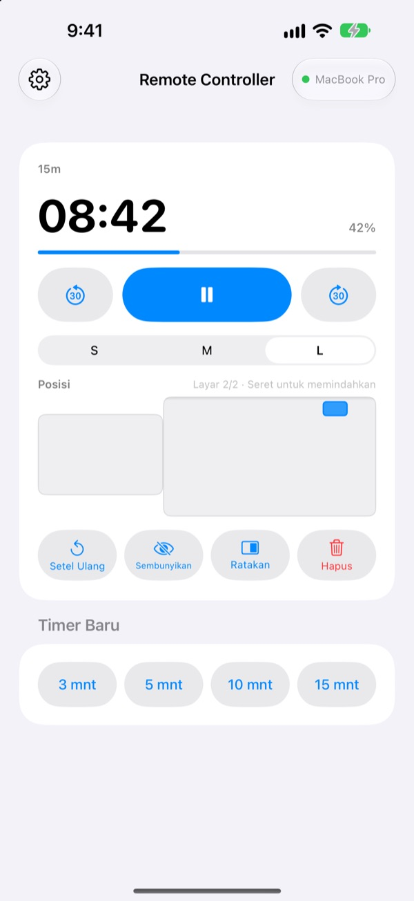
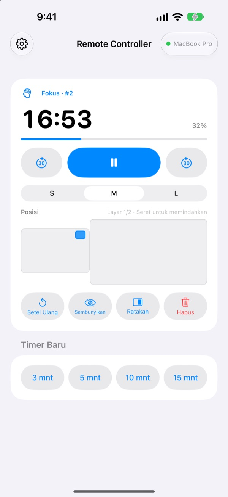
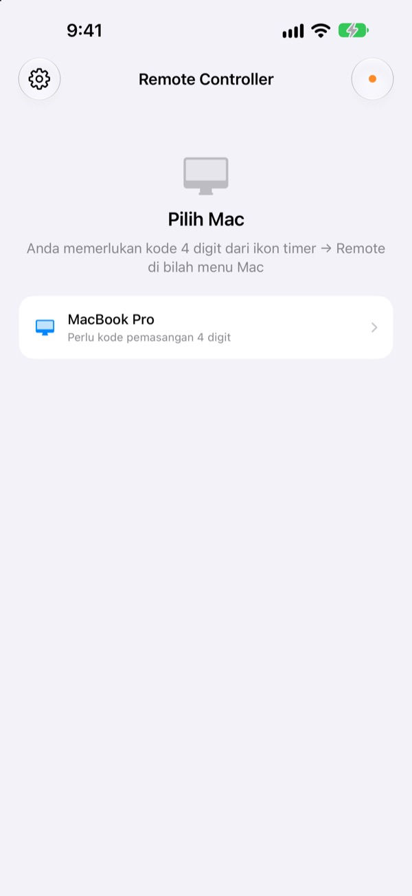

Jauh dari Mac,
timer tetap di tangan
Kendalikan timer StickyPresenter di Mac dari iPhone Anda. Berjalanlah ke depan ruangan dan tetap lihat sisa waktu, jeda, tambah 30 detik, atau geser timer yang menutupi grafik.
Gratis · iOS 17 atau lebih baru · Perlu Mac yang menjalankan StickyPresenter di Wi‑Fi yang sama.

Masih bolak-balik ke laptop hanya untuk menyentuh timer?
Presentasi molor dan Anda butuh waktu tambahan. Timer pas menutupi grafik terpenting Anda. Selama ini, artinya menyeberangi panggung dan meraih trackpad di depan semua orang. Dengan Remote Controller, Anda tetap di tempat dan cukup mengetuk iPhone sekali.
Lihat sisa waktu dan ubah saat itu juga
Sisa waktu dan progres diperbarui setiap detik. Saat Pomodoro, terlihat juga apakah sedang Fokus atau Istirahat dan siklus ke berapa.
Bicara terlalu lama? Tambah 30 detik. Selesai lebih cepat? Kurangi 30 detik. Mulai timer baru 3, 5, 10, atau 15 menit dengan satu ketukan, dan ganti ukuran widget ke S, M, atau L agar terbaca dari barisan belakang.

Masukkan kode sekali, selesai
Buka aplikasinya, dan setiap Mac di Wi‑Fi Anda yang menjalankan StickyPresenter muncul di daftar. Pilih Mac Anda lalu ketik kode empat digit dari ikon timer ▸ Remote di bilah menu Mac.
Setelah itu, aplikasi terhubung sendiri ke Mac tersebut setiap kali dibuka. Tanpa akun, tanpa server: kedua perangkat berkomunikasi langsung lewat jaringan lokal Anda.

Siap dipakai dalam tiga langkah
- 1
Buka StickyPresenter di Mac
Begitu ikon timer muncul di bilah menu, semuanya siap. Aplikasi tetap di sana meski semua jendelanya ditutup.
- 2
Buka aplikasi di Wi‑Fi yang sama
Saat diminta akses Jaringan Lokal, ketuk Izinkan. Dengan begitu aplikasi bisa menemukan Mac Anda.
- 3
Pilih Mac dan masukkan kode
Ketik kode pemasangan empat digit dari ikon timer ▸ Remote di bilah menu Mac, dan timer pun ada di tangan Anda.
Yang bisa dilakukan dari iPhone
- Sisa waktu
- Sisa waktu, progres, Fokus atau Istirahat Pomodoro, dan nomor siklus, setiap detik
- Mulai · Jeda
- Satu tombol besar di tengah
- −30 dtk · +30 dtk
- Tombol di kiri dan kanan langsung mengubah timer yang sedang berjalan
- Timer Baru
- 3, 5, 10, atau 15 menit
- Ukuran Widget
- Widget ukuran S, M, atau L
- Posisi
- Seret di miniatur tata letak layar Mac, bahkan ke layar tambahan
- Sembunyikan
- Sembunyikan widget dari penonton sejenak
- Ratakan
- Kembalikan widget yang hilang ke samping jendela timer
- Setel Ulang · Hapus
- Mulai timer dari awal, atau hapus
- Pintasan · Siri
- Ucapkan
Mulai timer dengan Remote Controlleruntuk memunculkan timer di Mac
Remote hanya bekerja dengan timer yang berjalan di Mac. Catatan dan naskah teleprompter tidak pernah dikirim ke iPhone, dan aplikasi ini tidak mengganti slide.
Pertanyaan
Bisakah aplikasi iPhone dipakai sendiri?
Tidak. Remote Controller adalah remote untuk StickyPresenter di Mac, jadi StickyPresenter harus berjalan di Mac pada Wi‑Fi yang sama. Unduh aplikasi Mac lewat tautan di bawah, atau dari Dapatkan Aplikasi Mac di Pengaturan aplikasi.
Mac saya tidak muncul di daftar.
Jika belum ada Mac yang muncul setelah 10 detik, aplikasi menampilkan daftar periksa. Cek dari atas: StickyPresenter berjalan di Mac (ikon timer ada di bilah menu), kedua perangkat di Wi‑Fi yang sama (Wi‑Fi tamu tidak bisa), Remote Controller aktif di Pengaturan ▸ Privasi & Keamanan ▸ Jaringan Lokal pada iPhone, StickyPresenter diizinkan di Pengaturan Sistem ▸ Privasi & Keamanan ▸ Jaringan Lokal pada Mac, dan VPN dimatikan.
Muncul pesan kode salah.
Masukkan empat digit yang sedang tampil di ikon timer ▸ Remote pada bilah menu Mac. Jika seseorang menekan Kode Pemasangan Baru di Mac, hanya kode baru yang berlaku.
Muncul pesan Mac tidak lagi mengenali iPhone ini.
Ini terjadi setelah Lupakan Remote yang Dipasangkan dipilih di Mac, atau setelah StickyPresenter dipasang ulang. Ketuk Mac di daftar lalu masukkan kode pemasangan sekali lagi.
Muncul pesan Mac tidak merespons.
Pastikan Mac tidak sedang tidur, kedua perangkat di Wi‑Fi yang sama, dan VPN dimatikan.
Muncul pesan aplikasi Mac perlu diperbarui.
StickyPresenter di Mac Anda lebih lama daripada remote-nya. Perbarui lewat Mac App Store, lalu pilih Mac itu lagi.
Amankah dipakai di ruang rapat yang penuh Mac?
Aman. Remote hanya berbicara dengan satu Mac yang sudah dipasangkan, dan remote yang tidak tahu kode Anda tidak bisa menjangkau Mac Anda. Semuanya lewat koneksi langsung terenkripsi di jaringan yang sama. Jika kode Anda pernah terlihat orang lain, tekan Kode Pemasangan Baru di Mac.
Apa saja yang dikirim lewat internet?
Timer dan perintah tidak pernah keluar dari jaringan lokal. Yang dikirim lewat internet hanya statistik penggunaan anonim, laporan crash, dan masukan yang Anda kirim sendiri. Detailnya ada di kebijakan privasi.
Bisakah Siri memulai timer sesaat sebelum saya tampil?
Bisa. Ucapkan "Mulai timer dengan Remote Controller", atau pakai tindakan Mulai Timer di Mac di app Pintasan. Aplikasi terbuka dan memulai timer sepanjang yang Anda pilih (1 sampai 600 menit) begitu terhubung ke Mac.
Ada pertanyaan, bug, atau ide? Kirim email ke mizzking75@gmail.com, atau kirim langsung dari iPhone lewat ikon roda gigi di kiri atas aplikasi ▸ Masukan.